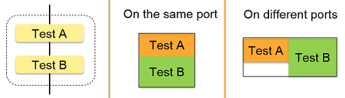

SmartRDI: Testflow level burst and concurrency tests
SmartRDI naturally supports burst and concurrency in test suite level when different test blocks are in an RDI_BEGIN and RDI_END block.
In 2.4.0, SmartRDI provides two classes CCTestMethod_SYNC and CCTestMethod_ISR to support burst and concurrency in testflow level with multiple tests that are located in different test suites.

From 2.5.1, SmartRDI provides postBurst() to fully support concurrent test framework.
Functional changes
- Introduced in SmartRDI 2.4.0
- SmartRDI 2.5.1: Enhanced with a new function postBurst().